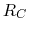
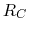
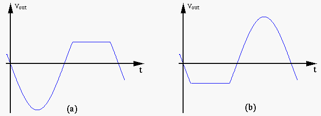
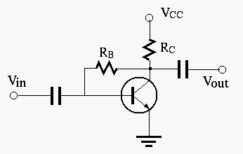

The input voltage to an RCL series circuit is
 .
By adjusting the capacitance of
.
By adjusting the capacitance of  , a maximum current of
, a maximum current of  (rms) is
achieved, and the voltage across the capacitor is measured to be (rms).
Find the circuit parameters
(rms) is
achieved, and the voltage across the capacitor is measured to be (rms).
Find the circuit parameters  ,
,  ,
,  and the quality factor . Is this
system over or under damped?
and the quality factor . Is this
system over or under damped?
Solution
The output  of the transistor circuit with a sinusoidal input
is plotted. As you can see,
of the transistor circuit with a sinusoidal input
is plotted. As you can see,  is distorted in either of the two
cases of (a) and (b). As the designer of the circuit, you can change
is distorted in either of the two
cases of (a) and (b). As the designer of the circuit, you can change  ,
 and/or
,
 and/or  to avoid the distortion.
to avoid the distortion.

Hint: Draw the input and output characteristic plots of the transistor circuit to visualize how each of the two types of distortion can be avoided.
Solution:
The circuit below shows a simple means for obtaining improved bias
stability of the DC operating point of the transistor. As always,
assume  when answering the following questions.
when answering the following questions.

Solution: